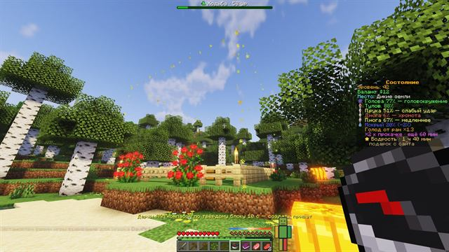
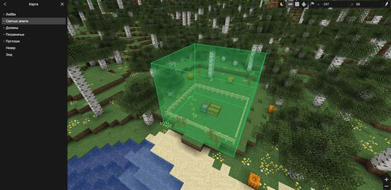

Из нашего игрового чата
Дословно, как писали в чате. Мы читаем каждое сообщение: многое на сервере появилось именно по просьбам игроков.

пожалуй, это тот майнкрафт, который я хотела.. даже самый маленький шаг позволяет чувствовать твой прогресс, ты ощущаешь свою значимость в мире
серв кайфовый с этими скилами
хорош, правда, в начале прям тяжко, но видно, что над сервером стараются
классно, что для войса даже моды не нужны
вот и славненько, сервер для ценителей хардкора. на сайте прям ваще столько всего
пока-что все плагины достаточно грамотно друг с другом работают
10 из 10 за нпс
Я думаю у сервера большой потенциал

Пять шагов — и ты в игре
Обычный Minecraft Java 1.21.10, без модов. TLauncher тоже подходит. Адрес и команды копируются нажатием.
Всё об игре — по разделам
Миры, прокачка, тело, экономика, команды и правила — подробно, с цифрами.